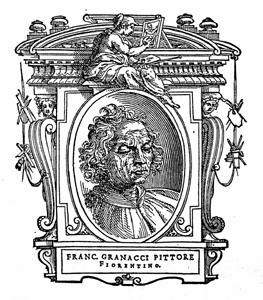
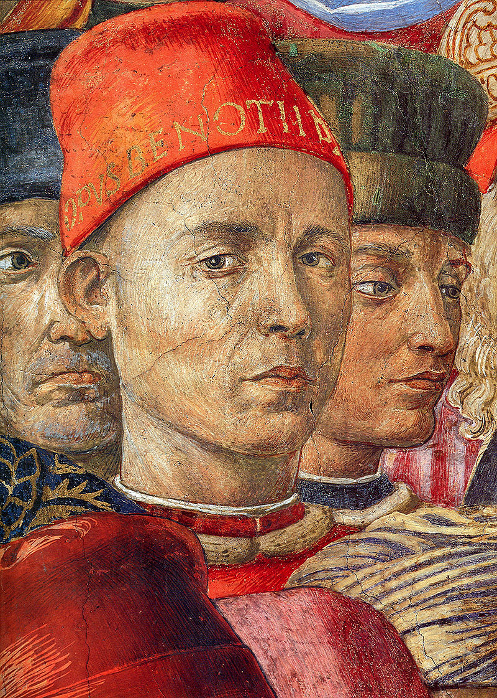

Что мы о нём знаем?
Пока ничего... Зато мы точно знаем, что в галерее есть на что посмотреть!
В галерею

Доменико Гирландайо
2 июня 1448 — 11 января 1494.
Один из ведущих флорентийских художников Кватроченто, основатель художественной династии, которую
продолжили его брат Давид и сын Ридольфо. Глава художественной мастерской, где юный Микеланджело в
течение года овладевал профессиональными навыками. Автор фресковых циклов, в которых выпукло, со
всевозможными подробностями показана домашняя жизнь библейских персонажей (в их роли выступают знатные
граждане Флоренции в костюмах того времени).

Граначчи, Франческо
2 июля 1469 — 30 ноября 1543.
По заказу Лоренцо Медичи Великолепного Граначчи участвовал в росписи церкви Сан-Марко во Флоренции.
Позднее работал с Леонардо да Винчи, Микеланджело и Рафаэлем. В 1508 году Граначчи отправился в Рим, где
вместе с другими художниками помогал Микеланджело переносить кальки (подготовительные рисунки) для
росписи на потолок Сикстинской капеллы в Ватикане. Вернувшись во Флоренцию, он написал образ Мадонны с
Младенцем между святыми Франциском и Иеронимом для монастыря августинцев Сан-Галло (San Gallo; ныне в
Галерее Академии), Мадонну делла Чинтола для конвенто Сан-Бенедетто. В 1515 году он участвовал в
оформлении апартаментов для визита папы Льва X во Флоренцию.

Беноццо Гоццоли
1420 — 4 октября 1497.
Самостоятельная творческая деятельность Беноццо Гоццоли началась в 1450-е годы. Он известен в основном
как автор многочисленных фресок, из которых самая знаменитая — роспись Капеллы волхвов в Палаццо
Медичи-Риккарди во Флоренции. Эта фреска изображает шествие волхвов и представляет собой единую
композицию, занимающую три стены небольшой капеллы. Фреска изобилует тщательно выписанными деталями:
волхвы с многочисленной свитой, всадники в роскошных одеждах, деревья, животные, птицы, замки,
монастыри, рощи, скалы и т. д. Несмотря на определённую идеализацию образов, в участниках шествия
принято видеть изображения реальных исторических лиц, в том числе членов семьи Медичи[4]. На картине
художник изобразил и самого себя: это человек в красной шапке с надписью Opus Benotii, устремивший
пристальный взгляд на зрителя.

 Музей им. Щусева
с 20 марта по 30 апреля
Музей им. Щусева
с 20 марта по 30 апреля